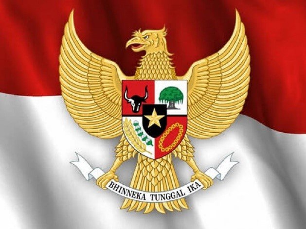
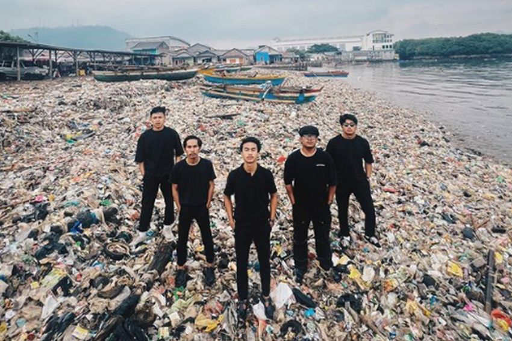
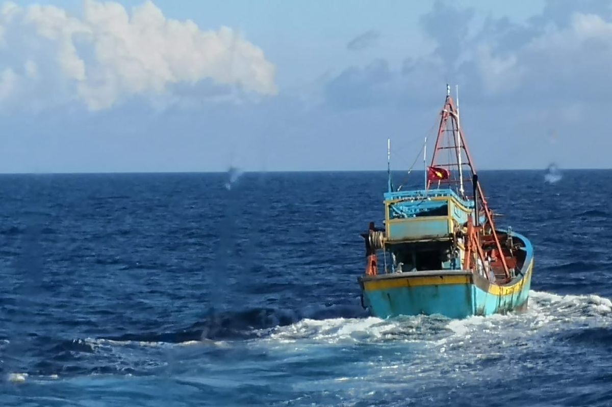
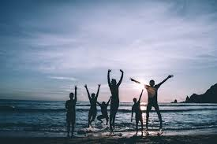

.png)


   
Melalui kerja sama internasional, Indonesia menunjukkan rasa kemanusiaan dan tanggung jawab untuk menjaga lingkungan yang mempengaruhi kehidupan masyarakat global, khususnya yang terdampak oleh kerusakan ekosistem lautnya. Contoh konkrit tindakannya adalah Indonesia melakukan program edukasi dan pelatihan bagi para nelayan, diajarkan teknik penangkapan ikan yang ramah lingkungan.
Dalam program rehabilitasi terumbu karang, pihak pemerintah mengajak para pelajar, nelayan, dan juga pegawai negeri untuk bersama-sama menanam kembali terumbu karang, untuk menciptakan rasa persatuan dalam menjaga laut sebagai warisan bersama. Contoh konkrit tindakannya adalah program gotong royong “restorasi Laut” yang melibatkan seluruh lapisan masyarakat, mulai dari anak sekolah, hingga organisasi masyarakat, untuk menjaga dan memulihkan wilayah pesisir.
Dengan upaya melindungi sumber daya laut yang berkelanjutan, Indonesia memastikan kesejahteraan masyarakat pesisir itu adil dan berkelanjutan, sehingga tidak ada ketimpangan dalam pemanfaatan kekayaan laut. Contoh konkrit tindakannya adalah penegakan hukum terhadap perusahaan ataupun kapal asing yang melakukan perikanan ilegal, mereka bekerja sama dengan organisasi internasional dan menggunakan teknologi pelacakan untuk melindungi hak nelayan lokal dan menjaga sumber daya laut.